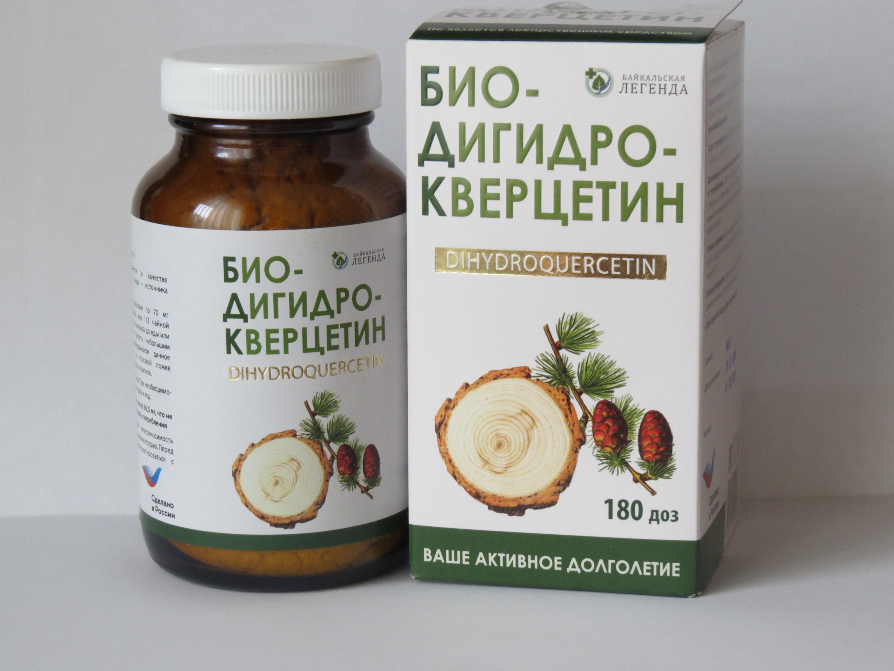

后退
针叶林健康


单价 元 660
贝加尔紫杉叶素是由西伯利亚地区距离贝加尔湖五百公里处的西伯利亚落叶松加工而成。
这里是一处远离文明，拥有洁净的原生态地区，
落叶松就在西伯利亚原始森林全自然条件下生长。
二氢槲皮素/紫杉叶素的活性成分是在没有化学合成的情况下从原料中释放出来。
使用的溶剂是水和乙醇。 通过HPLC方法（高效液相色谱法）进行过滤提纯。
物质在精炼过程中最理想的状态是当100个中的98个分子是单分子时，
这意味着所有5个羟基都具有生物活性，并且随时可用。
本体中不存在二氢槲皮素的聚合物。
这意味着98％的分子穿透血液，然后穿透细胞膜并进行必要的工作
请注意！服用前务必咨询治疗医生。
贝加尔紫杉叶素可提高身体整体状态。
服用期间表现出精力充沛及降低易疲劳。
增加身体对外部环境的抵抗力，免疫力得到加强。
而最重要的是，贝加尔紫杉叶素通过有益加强血管和毛细血管壁，从而减少出血的可能性！
药理作用 该药物具有抗氧化活性，抑制细胞膜和血清脂蛋白的脂质过氧化过程，防止自由基的破坏作用，
重新激活巯基化合物和维生素C，谷胱甘肽，生育酚，防止肾上腺素转换为有毒的肾上腺色素。
它显示出抗毒作用，保护肝脏免受嗜肝毒素的侵害，其中包括四环素，四氯化碳，乙醇，中和亚硝胺。
毛细管保护作用表现为抑制透明质酸酶的作用，透明质酸酶是一种侵犯血管壁完整性的酶，可改善间质性呼吸，心肌收缩力，
减少心肌感染区域，有助于兴奋性和传导性的正常化。
它具有与大脑中的苯二氮卓受体结合的能力，引起镇静，降血压和镇痛作用，影响血小板的苯二氮卓受体并减少血栓素的产生，
降低血小板的血栓形成潜力。
二氢槲皮素|使用说明:
作为黄酮类化合物（二氢槲皮素）的额外来源：
—用于预防身体过早衰老;
— 用于预防癌症;
—适用于病后康复身体;
—预防和消除酒精中毒的影响，
尼古丁，劣质食品，其他有机食品和无机毒药的影响;
— 在心血管系统疾病中：作为复合体的一部分
治疗冠心病（不稳定型心绞痛），房性心律失常，动脉粥样硬化，
高血压; 违反毛细血管通透性和外周循环;
— 用于胃肠道疾病：胃溃疡和十二指肠溃疡，长期病因不明的肠功能障碍，糜烂性和萎缩性胃炎;
— 适用于呼吸系统疾病：支气管肺疾病，包括肺炎，慢性阻塞性支气管炎，支气管哮喘（感染形式）处于急性期。